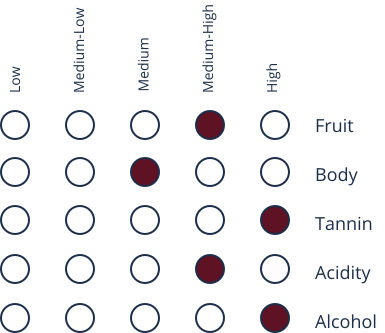
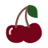

About
The name Valpolicella means “valley of many cellars” in a mix of Latin and Ancient Greek. It is believed to have been founded in Veneto around the 6th century AD and was readily traded in the 8th century. There are four different types of Valpolicella; Valpolicella Ripasso, Valpolicella Recito, Valpolicella Classico, and Amarone. Valpolicella Classico is the original Valpolicella and is produced in large quantities. All Valpolicella varieties have been designated as DOC or DOCG.
Taste Profile
Valpolicella
"val-pow-lee-CHEL-lah"
Dominant Flavors
- 
Tart Cherry
Cinnamon
Chocolate
Almond
Grapes
- Corvina and Corvinone:
contain cherry, spice, and green almond nodes - Rondinella
contain floral aromas - Molinara:
contain cinnamon, pepper and citrus aromas
Pairings
- Cheese:
Parmigiano Reggiano, Pecorino, Gorgonzola, and Asiago - Meat:
beef, steak, burgers, braised beef, and veal - Pasta:
Any pasta or risotto with cream, tomato or truffle sauce - Other:
dark chocolate, mushrooms, pizza, tiramisu
Serving
12℃- 15℃
Burgundy Glass
Regions
Veneto